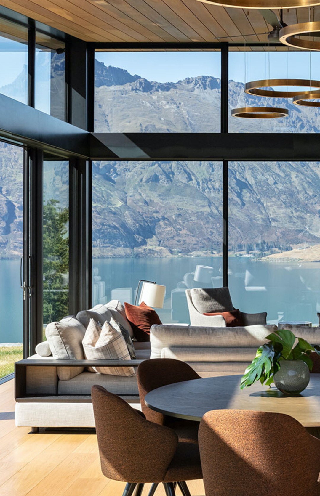
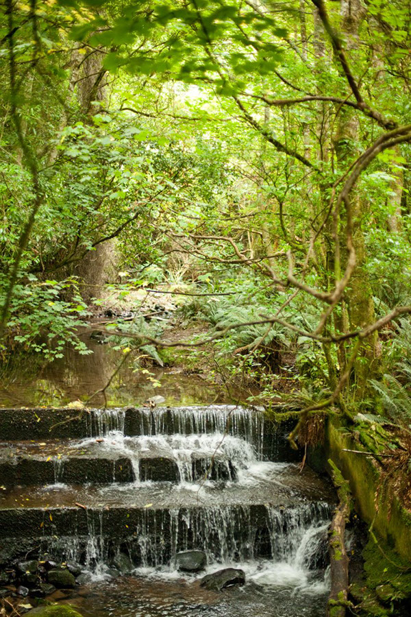

NEVER STOP
EXPLORING THE
WORLD
“There’s a real purity in New Zealand
that doesn’t exist in the states.It’s actually
not an easy thing to find in our world
anymore. It’s a unique place because it
is so far away from the rest of the world.
There is a sense of isolation and also being
protected.”


